Mobile · compact HUD, approximately 15% smaller visual scale (concept; not measured CSS sizing)Mood board & brand book — visual concept
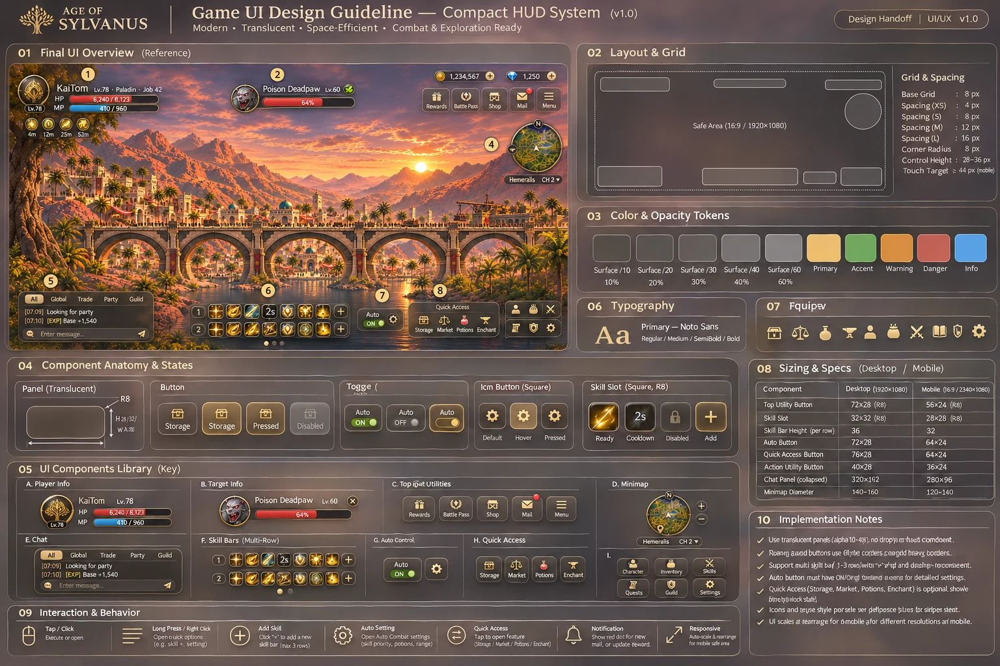
Visual design guideline — visual concept
ภาพ AI ใช้กำหนด mood และ composition เท่านั้น ไม่ใช่ pixel-perfect specification: HUD ล่าสุดยังมีจุด pagination และขาด EXP / Quick Aid บางส่วน ให้ยึดข้อกำหนดด้านล่างแทน Mobile v1.1 uses the updated landscape reference; its missing Auto Aid labels and small controls are not normative.
ภาพล่าสุดเป็น visual reference: ใช้ radial combat cluster แทน 4×2 grid ที่เสนอใน v1.0; ให้ถือ grid เป็นทางเลือกสำหรับทดสอบ thumb reach ไม่ใช่ข้อกำหนดบังคับ. ภาพยังไม่แสดง Auto Aid / Rules ครบ จึงต้องคงข้อกำหนด Quick Aid เดิมไว้. ไม่ใช้ภาพเป็น pixel-perfect spec.
Component
Mobile baseline (CSS px)
Behavior
Skill / utility
44–52 hit area; artwork 32–40
Rounded translucent utility tiles; radial combat artwork per reference; square skill slots remain an alternative.
Attack / Dodge / Lock
Attack 64–72; Dodge / Lock ≥44
Fixed anchors; independent touch input; do not overlap skill hit areas.
Joystick
96–112 diameter
Left thumb; movement continues during skill input; release on pointer cancel.
Quick Aid
4 slots, ≥44 each
Tap item to use; separate Auto ON/OFF and Rules; empty + assigns item.
Quick Access
≥44 each; 4 shortcuts + menu
Storage, Market, Potions, Enchant only if unlocked; collapse into menu on narrow screens.
Auto Combat
Toggle and gear each ≥44 hit area
Gear opens settings without changing ON/OFF; independent from Auto Aid.
Safe area / EXP
12–16 edge gap + device inset
Preserve both EXP bars; avoid system gesture area.
Mobile HUD scale: compact visual artwork, but do not scale interactive hit areas below 44 CSS px. Use landscape 844×390 as a reference viewport; test 640×360 and wider devices. Values are proposed implementation targets.
Adaptive states
State
Emphasis
Explore
Quest / minimap / NPC interaction; ลดความเด่นสกิล
Combat
Target / HP / skill readiness / cast feedback; ลดเมนูรอง
Auto Farm
Auto status / Quick Aid / optional session tracker; ปุ่มหลักไม่ย้าย
06 / Extend to other screens
Module
Guideline
Inventory / Storage
Reuse item grid, rarity, search, filter; count and empty states
Character / Equipment
Group stats; comparison and equipped slots
Skill / Passive Tree
Rounded square nodes, prerequisites, points, valid allocation states
Shop / Market
Clear price, ownership, filter, confirmation
Enchant
Show cost, success rate and outcome if supported
Quest
Objective first; details on demand
Party / Guild
Compact role and status, consistent tabs
Auto settings / Quick Aid
Separate toggles, rules, priorities and validation
Settings
Categorized navigation; HUD scale and layout reset
06A / Game-wide UI patterns · v2.1
ขยาย Brand Book จาก HUD ไปยังระบบหลักทั้งเกม โดยคง Artwork, ข้อมูล และกลไกเดิม ไม่สร้าง Main Menu ใหม่แทนหน้าต่างจริง
HUD
35% opacity · Floating controls
Widget
60% opacity · Chat / Quick Aid
Window
90% opacity · Inventory / Skill
Commerce
92% opacity · Shop / Battle Pass
Modal
96% opacity · Confirm / Rules
Overlay
50% opacity · Background dimming
Opacity เป็นค่าเริ่มต้นที่เสนอ; ตรวจ contrast กับฉากสว่างและมืดจริง ใช้ radius 6–8px, borderless by default, 4px spacing grid, Inter / Noto Sans Thai, headings 20–24px, body 13–14px. Mobile touch targets ≥44 CSS px.
01 · Inventory & Equipment
v2.1 · Visual study 01
Inventory & Equipment — in-game desktop
Supplied visual concept · click to save reference image · not production specification
Adopt: Preserve three independently movable windows and the game world.
Implementation corrections: The image mixes mobile joystick/radial controls with desktop windows; remove those controls on desktop and retain the existing keyboard HUD. The HUD identity (KaiTom / Paladin) conflicts with the Druid panel; use the same live character throughout. Verify VIT 84 and all other stats against the original; do not copy AI-rendered values. Reduce decorative gold outlines and use a darker window surface for readability.
Character & Inventory×
Status
Druid · Lv.150 / Job 70
Stat points left: 0
STR232
AGI48
VIT84
INT89
DEX32
LUK132
Combat stats ▾
Equipment
+8
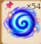
+8
+8
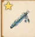
+8
Inventory
AllConsumableEquipmentMaterialsMore
Search items… Sort: Quantity ▾
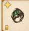
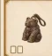
Weight 2,310 / 10,352 (22.3%)
Use / EquipDismantleDiscardFavorite
Proposed HTML layout study · static, not live game functionality. Artwork crops from supplied screenshots.
Desktop: draggable/resizable windows, preserve item categories and favorite states. Mobile: Status / Equipment / Inventory tabs. Search and sort remain visible. Compare equipped item; confirm discard and show dismantle outcome. Rarity colors must use actual game mapping.
Original screen referenceCurrent Status / Equipment / Inventory
02 · Skill & Passive Tree
Skills×
ShapeshifterTamerPassive Tree
Skill points: 0Class 2 unlocked
Ursa
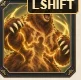
Ursa Form10/10
Ursa’s Savage5/5
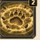
Stomp10/10
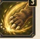
Maul5/5
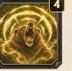
Primal Roar5/5
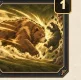
Brutal Charge10/10
Panther
Panther Form0/10
Panther’s Instinct0/5
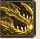
Panther’s Claw0/10
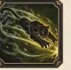
Hunt in the Dark0/5
Tear Apart0/10
True Cat0/5
Viper
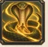
Viper Form0/10
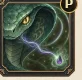
Viper’s Sense0/5
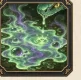
Toxin Splash0/10
Viper Molt0/5
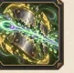
Acid Toxin0/10
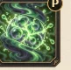
Updose0/5
Ursa Form
Rank 10 / 10 · Active
Current rank / Next rank
MP cost · Cooldown · Requirements
Read values from game data; no inferred dependencies.
Assign to hotbar
Reset skill
Confirm changes (disabled)
Proposed HTML layout study · static, not live game functionality. Artwork crops from supplied screenshots.
Show class tabs, branch groups, available points, current/next rank and prerequisites from authoritative game data. Passive Tree uses real node graph; no screenshot of passive tree supplied, so no fabricated connections. Mobile: pan/zoom with detail sheet; confirm or cancel pending allocation. Preserve reset and hotbar assignment.
Original screen referenceCurrent Tamer skill screenCurrent Shapeshifter skill screen
Supplied visual concept · click to save reference image · not production specification
Adopt: Season progress, compact perks, sticky tier labels, reward track and one gifting action.
Implementation corrections: Review/Rewards/Missions tabs are proposals; do not introduce duplicate destinations or unsupported missions. Preserve EXP sources and previous-level navigation (1–30). Hide Buy Level at max rank. Show pricing on pass details, not as persistent purchase prompts for active owners. Fragment/GEM fee is 5% (normally 10%), not a negative fee. All rewards claimed is a status, not an enabled action.
Battle Pass×
Akani Set
Equipment preview · Full set
Akani: The First Flame
Season 1 · Level 30 / 30
Standard & Premium active
EXP / Job +50% · Weight +50% · Market fee FREE
All perksBuy NPC −10% · Sell NPC +10% · Fragment/GEM fee 5% · Player mail · Preset slot +1
Level
26
27
28
29
30
Free
5 StarsClaimed ✓
Warp TicketClaimed ✓
5 StarsClaimed ✓
Warp TicketClaimed ✓
Season titleClaimed ✓
Standard
10 StarsClaimed ✓
20 StarsClaimed ✓
EXP BoostClaimed ✓
20 StarsClaimed ✓
Akani ScarfClaimed ✓
Premium
3 EXP Boost TicketsClaimed ✓
30 StarsClaimed ✓
15 StarsClaimed ✓
30 StarsClaimed ✓
Phoenix WingsClaimed ✓
All rewards claimed
Proposed HTML layout study · static, not live game functionality. Artwork crops from supplied screenshots.
Preserve all three reward tracks and seasonal artwork. Anchor to current level, sticky tier labels, horizontal scroll, explicit claimed/claimable/locked states. Keep gifting and level purchase available only when applicable; all reward/perk data from game state.
Original screen referenceCurrent Battle Pass
05 · Daily Rewards
v2.1 · Visual study 06
Daily Rewards — claim-first concept
Supplied visual concept · click to save reference image · not production specification
Adopt: Today and tomorrow cards, compact Star Pass, 30-day calendar with clear claimed states.
Implementation corrections: Remove unrelated Akani Set preview; it is not part of daily rewards. Reduce to a centered compact window (~65–70% desktop width subject to readability). Keep progress once; remove duplicate percentage/count. Star Pass must show its own Claimed today state. Footer should say Claimed today, not All rewards claimed (future days remain). Preserve all 30 rewards and cumulative login rules.
Daily Rewards×
Star Pass · Active
80 Stars/day · 3 days remaining Claimed ✓
Day 13 / 30
Today: 20,000 Gold · Claimed ✓
Tomorrow: 30 Stars
Day 1
5,000 Gold
✓ Claimed
Day 2
EXP Boost
✓ Claimed
Day 3
10,000 Gold
✓ Claimed
Day 4
10 Stars
✓ Claimed
Day 5
Warlord’s Steak
✓ Claimed
Day 6
20,000 Gold
✓ Claimed
Day 7
30 Stars
✓ Claimed
Day 8
5,000 Gold
✓ Claimed
Day 9
3 Warp Tickets
✓ Claimed
Day 10
10,000 Gold
✓ Claimed
Day 11
10 Stars
✓ Claimed
Day 12
Warlord’s Steak
✓ Claimed
Day 13
20,000 Gold
✓ Claimed
Day 14
30 Stars
Tomorrow
Day 15
5,000 Gold
Upcoming
Day 16
EXP Boost
Upcoming
Day 17
10,000 Gold
Upcoming
Day 18
10 Stars
Upcoming
Day 19
Warlord’s Steak
Upcoming
Day 20
20,000 Gold
Upcoming
Day 21
30 Stars
Upcoming
Day 22
5,000 Gold
Upcoming
Day 23
3 Warp Tickets
Upcoming
Day 24
10,000 Gold
Upcoming
Day 25
10 Stars
Upcoming
Day 26
Warlord’s Steak
Upcoming
Day 27
20,000 Gold
Upcoming
Day 28
30 Stars
Upcoming
Day 29
EXP Boost
Upcoming
Day 30
50 Stars
Upcoming
Cumulative login · Missing a day does not reset progress · New day starts at midnight (Thai time).
Proposed HTML layout study · static, not live game functionality. Artwork crops from supplied screenshots.
Claim-first: today’s reward and next reward above calendar. Separate Star Pass claim from daily login claim. Server controls day, eligibility, reset and duplicate-claim protection. Mobile: compact scrollable calendar; no tiny touch targets.
Original screen referenceCurrent Daily Rewards
Shared components: WindowShell, Tabs, ItemSlot, SkillNode, RewardTile, ProductCard, CurrencyBalance, ProgressBar, QuantityStepper, ConfirmationDialog. Provide loading, empty, error, disabled, focus and pending states. Server validates all purchases, claims and allocations. Preserve keyboard focus on modal close, support Escape, and avoid color-only statuses.
The five layout studies are HTML design concepts, not pixel-perfect final renders or game integrations. Cropped artwork may include parts of original UI. Passive node relationships, rarity mapping, and final mobile sizing require validation. Previous generated Main Menu concepts are not accepted as internal screen references.
One persistent category system. Contextual subcategories only. No duplicate Top up.
Collapsible category sheet; restore selection and scroll position.
Commerce
One balance group; explicit currency, price, duration, ownership and purchase confirmation.
Same information; touch-friendly detail sheet. Never charge from preview.
Visual consistency
Warm charcoal/walnut, ivory, muted antique gold; navy only as contextual artwork, not a separate component theme.
Same tokens; no whole-screen scaling.
Rewards
Claimable state first; claimed status is non-interactive; preserve calendar and track data.
Scrollable calendar or reward track, accessible labels and stable claim area.
Progressive disclosure
Rank details, perks, EXP sources and item descriptions on demand.
Use a sheet or expandable section, with visible back/close.
Skill & Passive Tree
Retain v2.0 HTML study; real prerequisites and node graph only.
No new visual supplied; pan/zoom and details remain proposals.
Krug acceptance principles
Design for scanning: prioritize the player’s immediate task. Group related information. Remove redundant controls, not useful capabilities. Use familiar labels and clear states. Preserve secondary details through progressive disclosure. Use text plus icon, not color alone.
Reference precedence
Authoritative game state and original screenshots → approved functional contracts → supplied visual studies. The two cosmetics images are alternative views of one system; the warm browse-first version is the recommended base. Existing desktop/mobile HUD, mood board, original screenshots and interactive demos are retained from v2.0.
06D / Onboarding & Character Creation · v2.3
One game · one design language · fewer decisions. ภาพเป็น visual concept เท่านั้น: ข้อกำหนดด้านล่างและข้อมูลเกมจริงมีลำดับความสำคัญเหนือภาพ
01 / Welcome & Agreement
Latest welcome concept — retain original logo and environment; simplify ornamental frames and glow before implementation.
รักษาข้อมูลเดิมทั้ง 4 หัวข้อ: No Data Wipe, Support the Creators, Cross-game Rewards, Shape the Balance. ใช้หัวข้อสั้นและรายละเอียดแบบเปิดอ่านเพิ่ม โดยไม่ตัดสาระหรือเปลี่ยนคำสัญญาของเกม
Latest character creation concept — single scene, race selector, character preview and future class information.Original character creation screenshotOriginal game screen — source for race and Human class paths.
Single-scene contract
เลือกเผ่า → ตั้งชื่อ → สร้างตัวละคร ใน scene เดียว ไม่มี stepper หรือ class selection. Starting class ผูกกับเผ่าโดยอัตโนมัติ
Human → Adventurer; Elf → Ranger; Druid → Tamer; Barbaric → Warrior; Night Elf → Rogue; Spirit → Mage. Dwarf starting class ต้องยืนยันชื่อเต็มจากข้อมูลเกม
Stack preview, race selector, class info, name; sticky Create
Video
Contextual modal, keyboard close, focus restore
Touch-friendly player, no autoplay, close restores state; lazy load only when opened
Name input
Inline validation and pending state
Keyboard-aware layout, keep input and CTA reachable; no viewport zoom suppression
04 / Brand & Krug rules
Reuse v2.2 tokens: Charcoal #1A1611, Walnut #302820, Antique Gold #C4A36B, Ivory #F2EBDD; 6–8px rounded rectangles; modal surface 96%; default/hover/selected overlays 8/16/25%; no ornamental frames or glow by default. Inter / Noto Sans Thai for body; Cinzel for fantasy headings. 44–48 CSS px touch targets; 4px spacing grid. Art carries fantasy identity, not interface ornamentation.
Status: proposed v2.3 extension. No live game integration or browser/device QA. Mobile onboarding and creation are specified and demonstrated responsively in HTML; dedicated corrected mobile artwork is not included.
06E / Settings & Passive Tree · v2.4
Modern Translucent Fantasy · Settings should be easy to scan, change and understand. ภาพเป็น visual concept; ค่าตั้งต้นและข้อมูลเกมให้ยึดระบบจริงเหนือภาพเสมอ
Settings visual studies
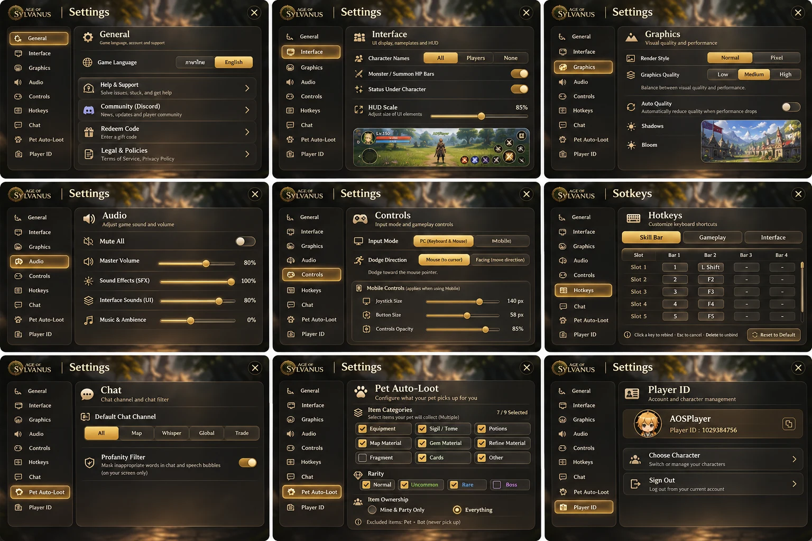
Settings overview — nine category concepts; layout and component treatment only.
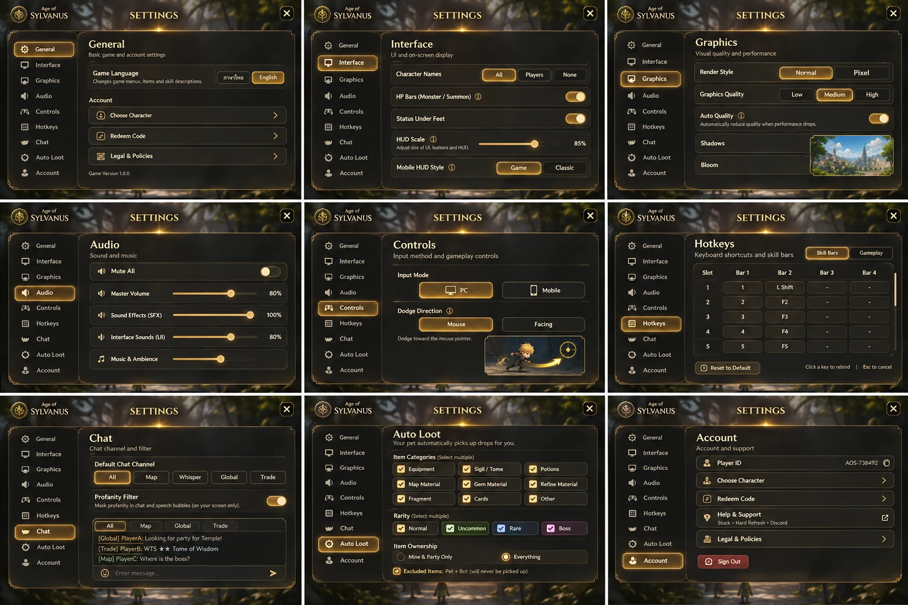
Alternative Settings shell — account/support and contextual controls.Passive Tree and Settings — node detail composition; effects and prerequisites are illustrative.
Unified navigation & information architecture
ใช้ Settings Shell เดียว: หัวข้อ Settings, Search, Close, sidebar และ content area. จัดหมวด Preferences (General, Interface, Graphics, Audio), Gameplay (Controls, Keybindings, Chat, Pet Auto Loot), Account & Support (Account, Help & Support). ไม่แสดง utility actions ซ้ำทุกหน้า; Stuck และ Warp to Town ใช้ action เดียวกัน.
Screen
Design & interaction contract
General
Language: Thai / English; player chat is not translated. Move support and account actions to their own groups.
Interface
Nameplates: All / Players / None; HP bars and status under feet: ON/OFF; HUD scale 85% in reference; mobile HUD Game / Classic; proposed live preview.
Graphics
Normal / Pixel; Low / Medium / High; Auto Quality and Shadows; Bloom referenced by original effects copy. Show effective quality when auto-adjusted.
Audio
Master 80%, SFX 100%, UI 80%, Music 0% in original; Mute ON. Preserve values when muted.
Controls
PC / Mobile input mode; Mouse / Facing dodge direction. Mobile controls: joystick 140px, buttons 58px, opacity 85% in reference. Show relevant controls by mode.
Keybindings
Four bars × nine slots; group interface and movement/combat shortcuts. Click to bind, Esc cancel, Delete unbind; proposed conflict feedback and reset confirmation.
Chat
Default channel: All / Map / Whisper / Global / Trade; profanity filter ON/OFF, local screen only.
Pet Auto Loot
Multi-select nine categories: Equipment, Sigil / Tome, Potions, Map Material, Gem Material, Refine Material, Fragment, Cards, Other. Rarity: Normal, Uncommon, Rare, Boss. Ownership: Mine & party / Everything after lock expires. Excluded items for Pet + Bot.
Account & Support
Player ID and copy, Redeem Code, Choose Character, Sign Out, Legal; Hard Refresh, Warp to Town (5-minute cooldown), Discord. Keep destructive actions secondary.


 +8
+8 +8
+8


 Ursa’s Savage5/5
Ursa’s Savage5/5 Panther Form0/10
Panther Form0/10 Panther’s Instinct0/5
Panther’s Instinct0/5 Tear Apart0/10
Tear Apart0/10 True Cat0/5
True Cat0/5 Viper Molt0/5
Viper Molt0/5